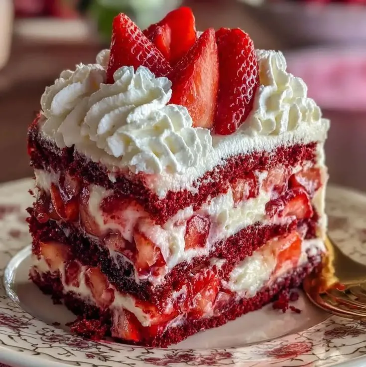
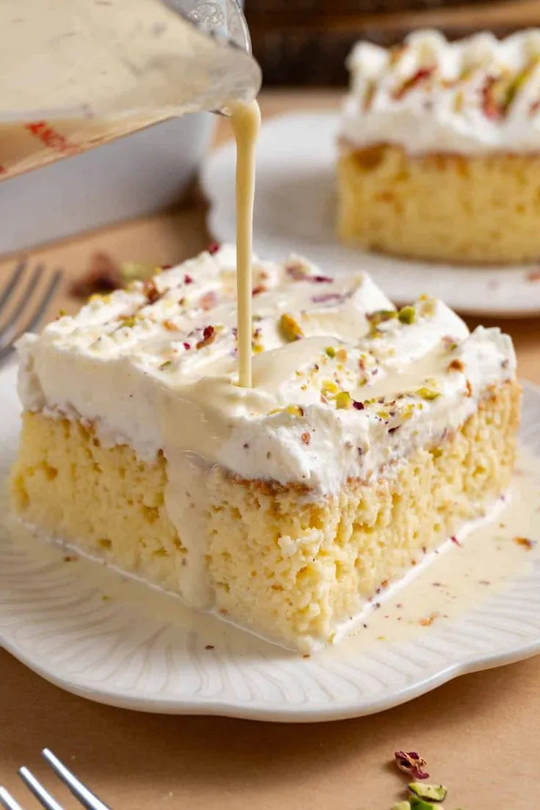

Sin horno
Sin horno
Pay de limon
El clásico postre frío de limón con galletas María. Cremoso, ácido y facilísimo.
Ver recetaEsta tarta Red Velvet con fresas combina la suavidad de un bizcocho aterciopelado con la frescura de las fresas naturales y un cremoso frosting de queso.

40 minutos
Receta facíl
Sin horno
Para preparar este delicioso postre frutal, vas a necesitar los siguientes ingredientes fáciles de conseguir
En un tazón, bate el queso crema con el azúcar glass y la esencia de vainilla hasta obtener una consistencia cremosa. En otro recipiente frío, bate la crema de leche a punto de nieve e incorpórala al queso con movimientos envolventes.
Corta la mayor parte de las fresas en cubos pequeños o láminas delgadas para intercalar en los rellenos. Reserva unas cuantas fresas enteras o cortadas por la mitad para la decoración superior.
Corta el bizcocho Red Velvet en rectángulos o capas finas. Coloca una primera base de bizcocho en tu molde o plato, distribuye una capa generosa de cream cheese y añade una capa abundante de fresas picadas. Repite el proceso hasta formar 3 niveles.
Cubre la parte superior con rosetones de la misma crema usando una manga pastelera y decora con las fresas reservadas. Refrigera durante al menos 30 minutos antes de servir para que adquiera firmeza.
Sin horno
El clásico postre frío de limón con galletas María. Cremoso, ácido y facilísimo.
Ver receta
10 minutos
Delicioso postre cremoso de fresas con capas de bizcocho suave y crema batida.
Ver receta
ClásicoEsponjoso, húmedo y con una crema suave. El favorito de toda la familia en cualquier celebración.
Ver receta¿Quieres ver todas nuestras recetas disponibles?
Ver todas las recetas